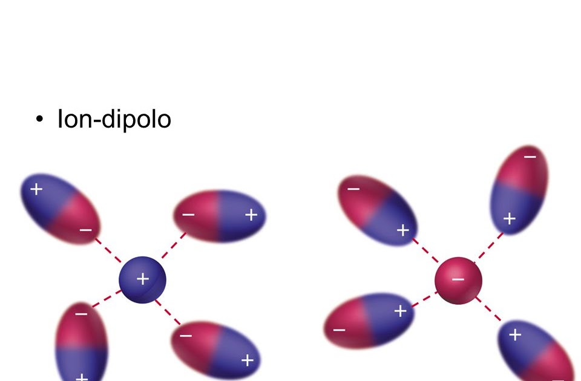

Las fuerzas intermoleculares son todas aquellas interacciones que tienen como función principal el poder mantener unidas a las moléculas, son un tipo de fuerza electrostática que le brinda una serie de propiedades a los líquidos y a los sólidos. Pueden ser enlaces iónicos o covalentes esencialmente. Este tipo de fuerza es la que se encarga de mantener unidas a todas las moléculas y además, son las que se encargan de proporcionar una serie de características con respecto a parte química de las sustancias. Este tipo de fuerza es importante principalmente en los gases pues son las responsables de cómo estos pueden llegar a comportarse. También tienen un papel fundamental en los estados de agregación de la materia, con esto nos referimos a los estados líquidos, sólidos o gaseosos. Estos enlaces participan activamente en una serie de procesos en las especies vivas y en los sistemas biológicos como por ejemplo en la catálisis enzimática.

En este caso se produce estabilización de las moléculas formando un enlace químico no covalente en el cual dos tipos de fuerzas participan, una es la de dispersión o atracción y las otras, de repulsión. La fuerza de dispersión es electrostática porque los átomos tienen la capacidad de formar dipolos pequeños que, cuando los electrones giran alrededor del núcleo, el dipolo provoca que los átomos se polarizan creando pequeñas fuerzas de atracción entre los dipolos. La repulsión electrostática se da en las capas electrónicas de los átomos que se ubican contiguos y el resultado es una distancia mínima entre los dos núcleos. Por último, el enlace de Van der Waals tiene tres tipos o clases de enlace, los de orientación, los de inducción y los de dispersión.
Este tipo de fuerza intermolecular se presenta cuando los iones existentes en una determinada sustancia interactúan con los dipolos que hay en una molécula covalente polar. El átomo que presenta una mayor electronegatividad tiene la capacidad de atraer electrones y de esta manera produce un dipolo negativo alrededor de él, mientras que se forma al mismo tiempo un dipolo positivo en el lugar donde hay menos electronegatividad. En el ion-dipolo, el catión tiene un tipo de atracción electrostática y es atraído por el dipolo negativo, el anión por su parte se atrae gracias a la fuerza electrostática hacia el dipolo que se encuentra positivo.
Ocurren entre un ión y una molécula apolar. Esto se debe a que la proximidad del ión provoca una distorsión en la nube electrónica de la molécula apolar que se convierte (de modo transitorio) en una molécula polarizada. En este momento se produce una atracción entre el ión y la molécula polarizada. Esto, por ejemplo, sucede en la interacción entre el ión Fe++ de la hemoglobina y la molécula de O2 , que es apolar, permitiendo la unión reversible del O2 a la hemoglobina y el transporte de O2 desde los pulmones hacia los tejidos.

Pasa en un medio acuoso, las moléculas hidrofóbicas tienden a asociarse para evitar interaccionar con el agua. Las moléculas hidrofóbicas se asocian para minimizar el número de moléculas de agua que puedan estar en contacto con las mismas. Este fenómeno se denomina efecto hidrofóbico y es el responsable de que determinados lípidos formen agregados supramoleculares, y se establecen entre los fosfolípidos que forman las membranas celulares (forman bicapas).
Las fuerzas intramoleculares son aquellas que unen a los átomos dentro de una molécula y son fuerzas que para ser ejecutadas, necesitan de la presencia de un cambio químico para luego determinar las propiedades químicas que se encuentran en una determinada sustancia. Por su parte, las fuerzas intermoleculares actúan sobre las moléculas haciendo que estos se repelen o se atraigan, se encargan entonces de determinar las diferentes propiedades físicas de los elementos.